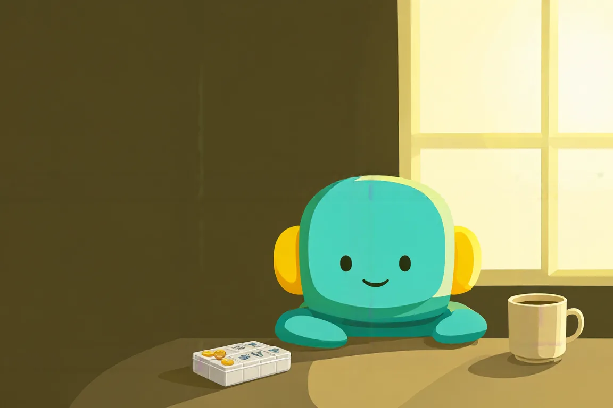
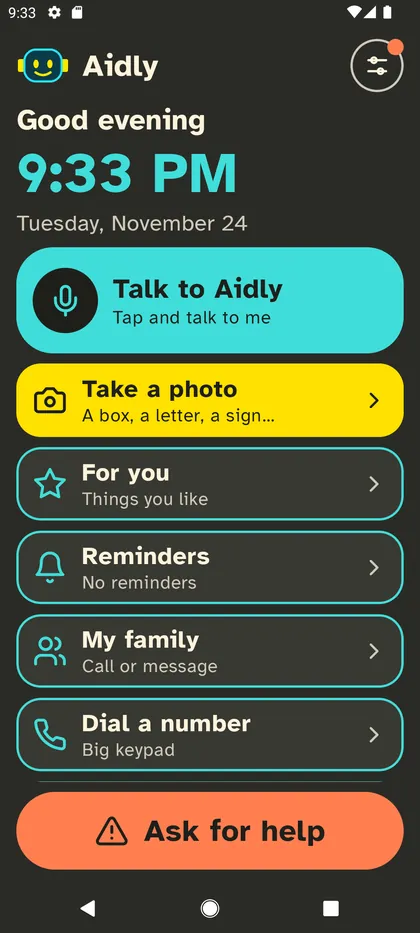
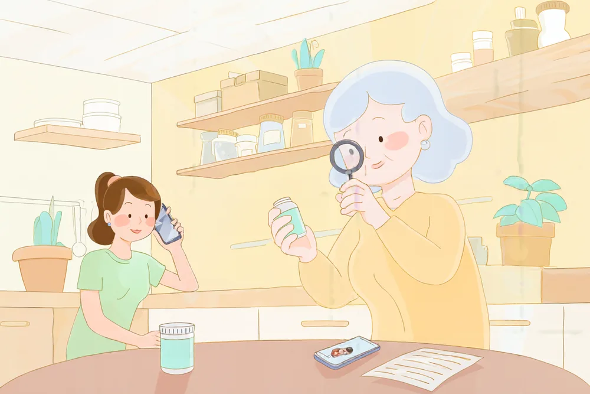
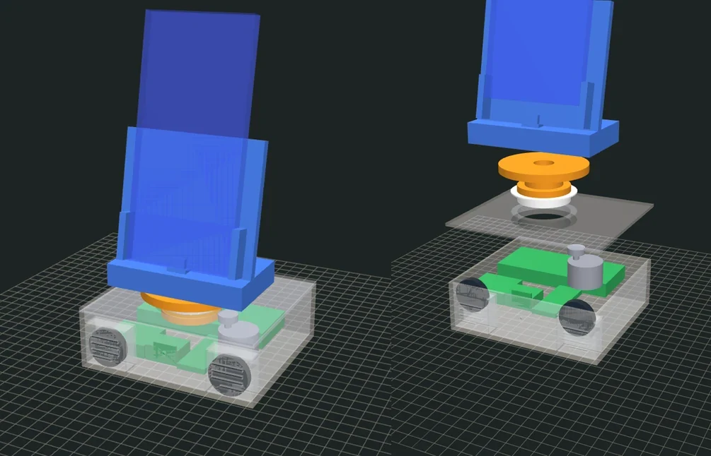

Aidly
AidlyTalkHablar
“Read my messages”, “remind me to take my pill at 8”, “call my daughter”. English and Spanish, hands-free.«Léeme los mensajes», «recuérdame la pastilla a las 8», «llama a mi hija». En español e inglés, sin tocar nada.
Meet your proactive AI companionConoce a tu compañero de IA proactivo
An Android voice companion for older adults. It reads your messages, tells you what a medicine box or a letter says, reminds you, and lets your family know you are okay. Only if you choose.Un compañero de voz para Android pensado para personas mayores. Lee tus mensajes, te dice qué dice una caja de medicina o una carta, te recuerda cosas y avisa a tu familia que estás bien. Solo si tú quieres.
Made for the #BuildHybridAI 2026 hackathon, with Firebase AI Logic (Gemini in the cloud, Gemini Nano on the phone when available).Hecha para el hackathon #BuildHybridAI 2026, con Firebase AI Logic (Gemini en la nube y Gemini Nano en el teléfono cuando existe).


About AidlySobre Aidly
Many older adults live alone by choice while their families work far away. Typing on tiny keys is hard, the small print on medicine boxes is unreadable and complex menus leave people exposed to scams. Most “senior” apps make the buttons bigger and then wait. Aidly speaks, listens, reads, reminds and checks in, and shares nothing the person has not switched on.Muchas personas mayores viven solas por decisión propia mientras su familia trabaja lejos. Escribir en teclas pequeñas es difícil, la letra de las cajas de medicina no se lee y los menús complejos las dejan expuestas a estafas. La mayoría de apps «para mayores» agrandan los botones y luego esperan. Aidly habla, escucha, lee, recuerda y pregunta cómo estás, y no comparte nada que la persona no haya activado.

100% voice firstpor voz“Read my messages”, “remind me to take my pill at 8”, “call my daughter”. English and Spanish, hands-free.«Léeme los mensajes», «recuérdame la pastilla a las 8», «llama a mi hija». En español e inglés, sin tocar nada.
One camera button. A medicine box, a bill or a suspicious message is read and explained in plain words.Un solo botón de cámara. Una caja de medicina, una factura o un mensaje sospechoso se lee y se explica con palabras sencillas.
The family sees only what was switched on: last activity, medicine taken or not, a daily “I am fine”.La familia ve solo lo que se activó: la última actividad, si tomó la medicina, un «estoy bien» diario.
What it doesQué hace
Captures from the Android emulator, with the app in English. Every screen works in Spanish as well. The app has been run on a Samsung Galaxy A23.Capturas del emulador de Android, con la app en inglés. Todas las pantallas funcionan también en español. La app se ha probado en un Samsung Galaxy A23.
Everything one tap away: talk, take a photo, things you like, reminders, family, help.Todo a un toque: hablar, tomar una foto, lo que te gusta, recordatorios, familia y ayuda.
An animated face shows if it is listening, thinking or speaking. Nothing to type.Una cara animada muestra si escucha, piensa o habla. No hay nada que escribir.
One camera button for a medicine box, a letter, a bill or a suspicious message. It never answers dose questions.Un solo botón de cámara para una caja de medicina, una carta, una factura o un mensaje sospechoso. Nunca responde sobre dosis.
Cards from credited sources, ranked by what the person likes, read aloud, with the link to the full article.Tarjetas de fuentes citadas, ordenadas por lo que le gusta a la persona, leídas en voz alta y con el enlace al artículo.
Exact alarms with a big talking screen. Each one records if it was done, missed or postponed.Alarmas exactas con pantalla grande que habla. Cada una guarda si se hizo, se perdió o se pospuso.
The phone on a table, listening for “Aidly”. With consent, the camera only checks if someone is there, on the phone, nothing saved or sent.El teléfono sobre una mesa, escuchando «Aidly». Con permiso, la cámara solo comprueba si hay alguien, en el teléfono y sin guardar ni enviar nada.
Six faces to pick from, chosen during setup and changeable in Settings.Seis caras para elegir, en la configuración inicial y cambiables en Ajustes.
The emergency number of the country, or another one, and the person to call first.El número de emergencias del país, u otro, y la persona a la que llamar primero.
Favourite contacts one tap away, and a random family code. Everything is off by default, and “stop sharing” deletes it from the cloud.Contactos favoritos a un toque y un código familiar aleatorio. Todo viene apagado y «dejar de compartir» lo borra de la nube.
Alerts the family with the location and opens the dialer with the emergency number of the country.Avisa a la familia con la ubicación y abre el marcador con el número de emergencia del país.
The first screen says what stays on the phone and what goes to Google. “Only on my phone” turns the cloud off.La primera pantalla dice qué se queda en el teléfono y qué va a Google. «Solo en mi teléfono» apaga la nube.
Scroll sideways to see more →Desliza hacia el lado para ver más →

Design prototype, not builtPrototipo de diseño, no construidoAidly Dock
For the familyPara la familia
The person creates a family code in the app and shares it. The family opens a web page, with no account and no app to install, and sees only what was switched on. There is no real-time tracking, and the page says so.La persona crea un código familiar en la app y lo comparte. La familia abre una página web, sin cuenta ni app que instalar, y ve solo lo que se activó. No hay seguimiento en tiempo real, y la página lo dice.
Example of what the page shows (illustrative data).Ejemplo de lo que muestra la página (datos ilustrativos).
Honest statusEstado real
| TaskTarea | Where it runsDónde corre | WhyPor qué |
|---|---|---|
| Short conversationConversación corta | On the phone (Gemini Nano) when available, else cloudEn el teléfono (Gemini Nano) si existe, si no en la nube | Private, instant, works offlinePrivado, inmediato, sin conexión |
| RemindersRecordatorios | Local rules first, then the modelPrimero reglas locales, luego el modelo | A medicine reminder must not depend on a server. Code, not the model, computes the date.Un recordatorio de medicina no puede depender de un servidor. El código, no el modelo, calcula la fecha. |
| Photo of a box or letterFoto de una caja o carta | Gemini in the cloud, structured answerGemini en la nube, respuesta estructurada | Small print needs the stronger model; low confidence asks for another photoLa letra pequeña pide el modelo más fuerte; con poca confianza pide otra foto |
| Web questionsPreguntas de la web | Gemini with Google Search, else opens GoogleGemini con Búsqueda de Google, si no abre Google | Tools have no on-device modeLas herramientas no tienen modo local |